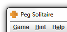
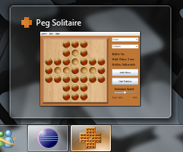
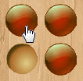
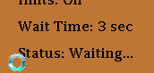
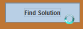
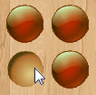

Other Features
Here are a few other features that have been implemented into the application.
Custom Icon
This application has a distinguishable, unique and custom icon.

Custom icon

Custom icon
Mouse Cursors
When the mouse is hovering over a piece, the mouse cursor will become a hand cursor.

Hand cursor
When the game is waiting for the hints to display or waiting to find a solution, the mouse cursor will become a waiting cursor.

Waiting for the hints

Waiting for the solution
If the mouse is not over a piece and the program is not waiting, the mouse cursor will remain as the default cursor.

Default cursor
Minimizing Game
Minimizing the window of the application will cause the animation of a solution to pause. When the window is un-minimized, the animation will resume.